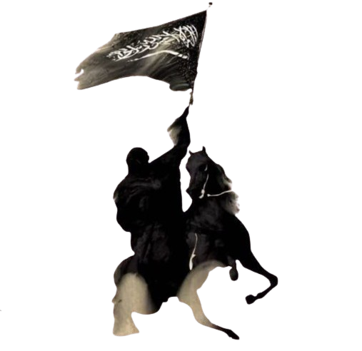

List of Sahabah
English ▼
Urdu
Abu Bakr `Abdullah ibn Abi Quhafa
Ali ibn Abi Talib
Aqeel ibn Abi Talib
Abdullah ibn Ja'far
Abdur-Rahman ibn Abu Bakr
Abdur-Rahman ibn Sakran
Abd al-Rahman ibn Awf
Abdullah ibn Abbas
Abd-Allah ibn Abd-Allah ibn Ubayy
'Abd Allah ibn 'Amr ibn al-'As
Abdallah ibn Amir
Abdullah ibn al-Zubayr
Abdullah ibn Hudhafah as-Sahmi
Abdullah ibn Jahsh
Abdullah ibn Masud
Abdullah ibn Suhayl
Abd Allah ibn Hanzala
Abd Allah ibn Mas'ada al-Fazari
'Abd Allah ibn Rawahah
Abdullah ibn Salam
Abdullah ibn Unais
Abdullah ibn Amr ibn Haram
Abdullah ibn Zayd
Abdullah ibn Umar
Abd-Allah ibn Umm-Maktum
Abdullah ibn Atik
Abbad ibn Bishr
Abu Basir
Abu Rafi' al-Qibti
Abu Bakra al-Thaqafi
Abu Darda
Abū l-Ṭufayl ʿĀmir b. Wāthila al-Kinānī
Abid ibn Hamal
Abid ibn Hunay
Abjr al-Muzni
[
ar
]
Abu al-Aas ibn al-Rabiah
Abu Ayyub al-Ansari
‘Abbas ibn ‘Abd al-Muttalib
Abu Dardaa
Abû Dhar al-Ghifârî
Abu Dujana
Abu Fuhayra
Abu Hudhaifah ibn Mughirah
Abu-Hudhayfah ibn Utbah
Abu Hurairah
Abu Jandal ibn Suhail
Abu Lubaba ibn Abd al-Mundhir
Abu Musa al-Ashari
Abu Qatada al-Ansari
Abu Quhafa
Abu Sa`id al-Khudri
Abu Salama `Abd Allah ibn `Abd al-Asad
Abu Sufyan ibn al-Harith
Abu Sufyan ibn Harb
Abu Ubaidah ibn al-Jarrah
Abu Talhah al Ansari
Abu Zama' al-Balaui
Abzâ al-Khuzâ`î
[
ar
]
Adhayna ibn al-Hârith
[
ar
]
Adî ibn Hâtim at-Tâî
Aflah ibn Abî Qays
[
ar
]
Ahmad ibn Hafs
[
ar
]
Ahmar Abu `Usayb
[
ar
]
Ahmar ibn Jazi
[
ar
]
Ahmar ibn Mazan ibn Aws
[
ar
]
Ahmar ibn Mu`awiya ibn Salim
[
ar
]
Ahmar ibn Qatan al-Hamdani
[
ar
]
Ahmar ibn Salim
[
ar
]
Ahmar ibn Suwa'i ibn `Adi
[
ar
]
Ahmar Mawla Umm Salama
[
ar
]
Ahyah ibn Umayya ibn Khalaf
[
ar
]
Ahzâb bin Usaid
(pronounced with an
alif
)
`Âisha bint Abî Bakr
Al-'Ala' Al-Hadrami
Al-Bara' ibn Mâlik al-Ansârî
Al-Bara' ibn Azib
Al-Hakam ibn Abi al-As
Al-Mughira
Abdullah ibn Abi Bakr
Al-Qa'qa'a ibn Amr at-Tamimi
Ammar bin Yasir
Amr bin Al`âs
Amr ibn al-Jamuh
Amru bin Ma'adi Yakrib
Anas ibn Nadhar
Anas ibn Mâlik
An-Nu`aymân ibn `Amr
An-Nu`mân ibn Muqarrin
Arbad ibn Humayrah
As'ad ibn Zurarah
Al-Arqam ibn-abil-Arqam
Asmâ' bint Abî Bakr
Asmâ' bint Umays
Asim ibn Thabit
Asim ibn Amr al-Tamimi
Atika bint Abdul Muttalib
Atiqa bint Zayd
Attab ibn Asid
At-Tufayl ibn Amr ad-Dawsi
Ayman ibn Ubayd
Ayyash ibn Abi Rabiah
Abu Mihjan as Tsaqafi
Amir bin al-Akwa'
Bashir ibn Sa'ad
Bilal ibn Malik al-Mazni
[
ar
]
Bilal ibn Rabah al-Habashi
Bilal ibn al-Harith
Bilal ibn Yahya
[
ar
]
Busr ibn Abi Artat
Dihyah ibn Khalifa al-Kalbi
Dhiraar bin Al-Azwar
Dhiraar ibn al-Khattab
Dhimad Al-Azdi
Fadl ibn Abbas
Fatima az-Zahra bint Muhammad
Fatima bint Al-Aswad
Fatima bint Asad
Fayruz ad-Daylami
Fatimah bint al-Khattab
Hasan ibn Ali
Husayn ibn Ali
Ḥamza ibn ʿAbd al-Muṭṭalib
Hanzala Ibn Abi Amir
Ibrahim ibn Muhammad
Ikrima ibn Abi Jahl
Imran ibn Husain
Iyad ibn Ghanm
Jaban al-Kurdi
Jabr
Jabir ibn Abdullah al-Ansari
Jafar ibn Abi Talib
Jamila bint Thabit
Jubayr ibn Mut'im
Julaybib
Jumanah bint Abi Talib
Juwayriya bint al-Harith
ka'ab ibn malik
Ka'b ibn Zuhayr
Khadijah bint Khuwaylid
Khalid ibn Sa`id
Kharija bin Huzafa
Khawlah bint Hakim
Khawlah bint al-Azwar
Khawlah bint Tha'labah
Khubayb ibn Adiy
Khunais ibn Hudhafa
Khuzayma ibn Thabit
Khabbab ibn al-Aratt
Al-Khansa
Khalid ibn al Walid
Labid ibn Rabi'a
Layla bint al-Minhal
Lubaba bint al-Harith
Lubaynah
Malik al-Dar
Malik bin Huwairith
Maria al-Qibtiyya
Maymuna bint al-Harith
Malik ibn an-Nadr
Miqdad ibn al-Aswad
Mu`adh ibn `Amr
Mu`adh ibn Jabal
Mu'awiya ibn Abi Sufyan
Mu`awwaz ibn `Amr
Muhammad ibn Ja'far
Muhammad ibn Maslamah
Munabbih ibn Kamil
Mus`ab ibn `Umair
Maslama ibn Mukhallad al-Ansari
Muhammad ibn Abi Bakr
Muhsin ibn Ali
Na'ila bint al-Farafisa
Nasr ibn Hajjaaj
Nadia
Nauman Nābigha al-Jaʽdī
Najiyah bint al-Walid
Nuaym ibn Masud
Nu'man ibn Bashir al-Ansari
Nafi ibn al-Harith
Nufay ibn al-Harith
Nusaybah bint Ka'ab
An-Nawwas ibn Sam'an
Nu'aiman ibn Amr
Al-Qa'qa' ibn Amr al-Tamimi
Qatada ibn al-Nu'man
Qutaylah bint Abd al-Uzza
Qutayla ukht al-Nadr
Rab'ah ibn Umayah
Rabiah ibn Kab
Rabi'ah ibn al-Harith
Ramlah bint Abu Sufyan
Rayhanah bint Amr
Rebi’i bin Aamer Al-Tamimi
Rufaida Al-Aslamia
Ruqayyah bint Muhammad
Rumaysa bint Milhan
Sa`sa`a ibn Suhan
Sa`d ibn Abî Waqâs
Sa`d ibn ar-Rabi`
Sa`d ibn Malik
Sa'd ibn Mua'dh
Sa'd ibn Ubadah
Sabra ibn Ma`bad
Sa`îd ibn Âmir al-Jumahi
Sa`îd ibn Zayd
Safiyyah bint ‘Abd al-Muttalib
Safiyyah bint Huyayy
Safwan ibn al-Mu‘attal
Safwan ibn Umayya
Salama Abu Hashim
Salama ibn al-Aqwa
Salim Mawla Abi Hudhayfah
Salma bint Umays
Salma bint Sakhri ibn `Amir
Salman al-Fârisî
Sahl ibn Sa'd
Sahl ibn Hunaif
Sahla bint Suhayl
Salit bin 'Amr 'Ala bin Hadrami
Samra ibn Jundab
Sawdah bint Zam`a
As-Sakran ibn Amr
Shams ibn Uthman
Shadad ibn Aus
Shurahbil ibn Hasana
Al-Shifa bint Abdullah
Sirin bint Sham'un
Suhayb ar-Rumi
Suhayl ibn Amr
Sumayyah bint Khayyat
Sufyan ibn Awf
Suraqa bin Malik
Shuja' ibn Wahab al-Asad
Sinan Bin Salamah bin Mohbik
Salman al-Farsi(Rōzbeh ibn Marzban)
Talhah ibn Ubaydullah
Tamim Abu Ruqayya
Tamim al-Ansari
Tamim al-Dari
Thabit ibn Qays
Thumamah ibn Uthal
Thuwaybah
Tufail Ibn Amr Ad-Dawsi
Umar Ibn al-Khattab
Uthman Ibn Affan
Ubadah ibn al-Samit
Ubaydah ibn al-Harith
Ubayda ibn as-Samit
Ubayy ibn Ka'b ibn Qays
Al-Akhnas ibn Shurayq
Umar ibn Harith
Umayr ibn Sa'd al-Ansari
Umayr ibn Wahb
Umamah bint Zaynab
Umm Ayman (Baraka bint Tha'laba)
Umm Hakim
Umm Hani
Umm Haram
Umm Kulthum bint Abi Bakr
Umm Kulthum bint Asim
Umm Kulthum bint Muhammad
Umm Kulthum bint Uqba
Umm Ma'bad
Umm Ruman bint `Amir
Umm Salamah
Umm Sharik
Umm Ubays
Umm ul-Banin
Ukasha Bin al-Mihsan
Uqbah ibn Amir
Urwah ibn Mas'ud
Usama ibn Zayd
Utbah ibn Ghazwan
Utban ibn Malik
Uthman ibn Abi al-As
Uthman ibn Hunayf
Uthman ibn Madh'un
Uthman ibn Talha
Wahb ibn Sa'd
Wahb ibn Umayr
Wahshi ibn Harb
Wabisa ibn Ma'bad al-Asadi
Walid ibn Uqba
Walid ibn al Walid
Yasir ibn Amir
Yazid Ibn Abi Sufyaan
Zayd al-Khayr
Zayd ibn al-Khattab
Zayd ibn Arqam
Zayd ibn Harithah
Zayd ibn Thabit
Zaynab bint Ali
Zaynab bint Jahsh
Zaynab bint Khuzayma
Zaynab bint Muhammad
Zish Shamalain
Zubair ibn al-Awam
Zunairah al-Rumiya